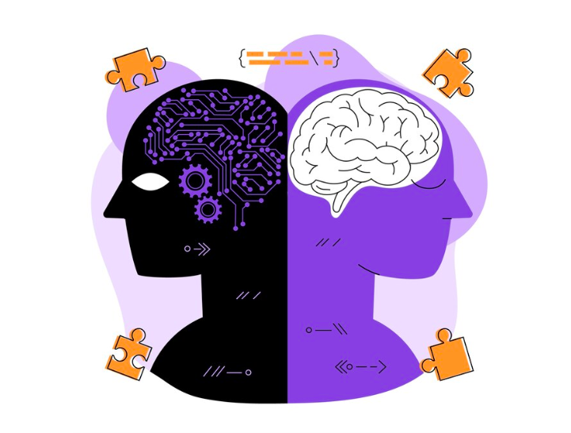

The Role of AI in Revolutionizing Gaming
Artificial Intelligence (AI) has emerged as a transformative force in the gaming industry, revolutionizing how games are developed, experienced, and evolved. From enhancing gameplay mechanics to personalizing player experiences, AI has become an integral part of modern gaming.
Dynamic Gameplay and Intelligent NPCs
AI has elevated the behavior of non-player characters (NPCs) to unprecedented levels. In the past, NPCs followed scripted patterns, making interactions predictable and repetitive. Today, AI algorithms allow NPCs to learn, adapt, and respond dynamically to players' actions, creating more immersive experiences.
Image from (Puresoftware)
For instance, AI-powered NPCs in games like The Last of Us Part II adapt their strategies, making each encounter unique. These advancements add depth to gameplay and keep players engaged for longer periods.
Procedural Content Generation
Procedural generation, powered by AI, enables the creation of vast, complex, and unique game worlds. This technology has been utilized in games where entire worlds are algorithmically generated, offering endless possibilities for exploration. AI ensures that these environments are not only expansive but also rich in detail and coherence.
Image from (Modl.ai)
Developers use AI to create diverse landscapes, intricate storylines, and unpredictable challenges, reducing the manual effort required to design every element. This allows studios to focus on innovation while delivering expansive gaming experiences.
Personalized Player Experiences
AI excels at analyzing player behavior and preferences, allowing games to adapt to individual playstyles. For example, AI-driven systems can adjust difficulty levels in real-time, ensuring that players are neither overwhelmed nor bored. This personalized approach keeps games accessible to a broader audience.
Image from (Data-science)
Games like Left 4 Dead utilize AI Director systems to control pacing and intensity, dynamically adjusting enemy spawns and item placements to maintain tension. Similarly, AI can recommend in-game content or guide players through complex narratives, ensuring a tailored experience for everyone.
Enhanced Graphics and Animation
AI has significantly improved graphics rendering and animation in gaming. Technologies like AI-driven tools can streamline the creation of lifelike graphics and animations, making characters feel lifelike and enhancing immersion and storytelling in games.
Image from (Transperfect)
Moreover, AI simplifies animation creation by simulating realistic movements and facial expressions. This technology makes characters feel lifelike, enhancing immersion and storytelling in games.
Improved Game Testing and Development
AI streamlines the game development process by automating testing and debugging. Traditional testing methods are time-consuming and prone to human error. AI bots can simulate countless gameplay scenarios, identifying bugs and balancing issues with precision.
Image from (Remocapp)
For example, Ubisoft's "Commit Assistant" uses AI to identify and fix coding errors, helping reduce tedious debugging hours. This speeds up production and allows developers to focus on refining gameplay.
Future Prospects of AI in Gaming
As AI continues to evolve, its applications in gaming will only expand. Future advancements may include fully autonomous game worlds where AI controls every aspect of the environment, creating endless possibilities for players.
Image from (Green.org)
AI could also play a significant role in enhancing accessibility, enabling games to cater to players with disabilities through adaptive controls and interfaces. Furthermore, the integration of AI with virtual and augmented reality could redefine immersive gaming, blurring the line between the virtual and real worlds.
Conclusion
AI has become a cornerstone of innovation in gaming, driving creativity and pushing technological boundaries. Whether it's through creating smarter NPCs, generating expansive worlds, or personalizing experiences, AI ensures that gaming remains a dynamic and evolving industry. As developers continue to harness the power of AI, players can look forward to richer, more engaging, and limitless gaming adventures.
References:
- How AI is Improving Gaming with Realistic NPC Behavior and Immersive Experiences." Blockchain Council
- Medium. "The Evolution of AI in Gaming: From NPCs to Procedural Content Generation." Medium.
- Data Science UA. "AI in Game Development: Transforming the Future." Data Science UA.
- TransPerfect Gaming. "AI in Gaming: Enhancing, Not Replacing, the Human Touch." TransPerfect Gaming.
- Remocapp. "AI in Gaming: How It Is Transforming Everything." Remocapp.
- Green.org. "AI's Revolution in the Future of Gaming." Green.org.